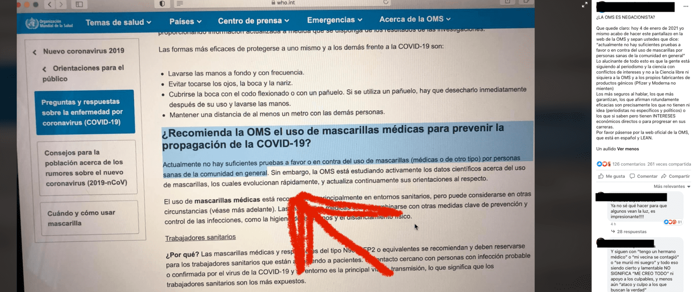
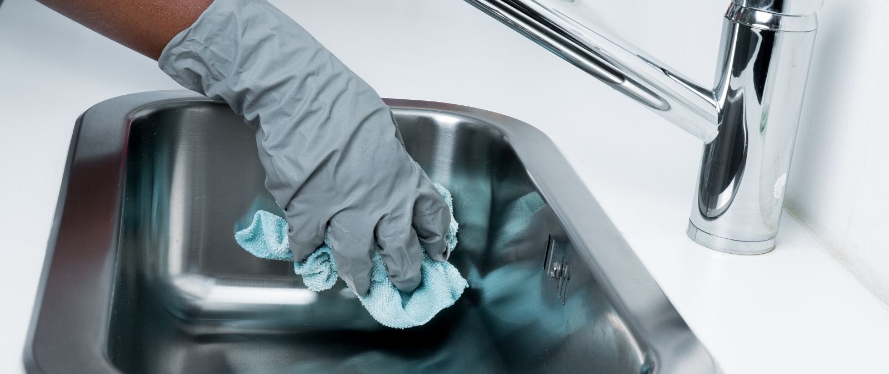

Qué ha dicho la OMS sobre el uso de mascarillas por parte de la población general

Circula un pantallazo de la página web de la OMS en el que se puede leer señalado el siguiente texto: '¿Recomienda la OMS el uso de mascarillas médicas para prevenir la propagación de la COVID‑19?Actualmente no hay suficientes pruebas a favor o en contra del uso de mascarillas (médicas o de otro tipo) por personas sanas de la comunidad en general', y se está utilizando como supuesta prueba de que la mayoría de la gente no debería utilizar mascarillas.La web es real pero no está actualizada.
La OMS publicó nuevas recomendaciones sobre el uso de mascarillas el 1 de diciembre de 2020 en las que asegura que 'Las mascarillas son esenciales para eliminar la transmisión y salvar vidas' y recomienda utilizarlas 'como parte de una estrategia integral de medidas para suprimir la transmisión y salvar vidas', si bien señala que por sí solas no bastan para proteger adecuadamente de la COVID-19.
Esta es la información que aparece en la mayoría de las páginas de la OMS que recogen recomendaciones y dudas sobre el uso de mascarillas por parte de la población general, y es la única que aparece navegando por la web en inglés.
Además, en la nota de prensa publicada el día 2 de diciembre para anunciar estas nuevas medidas se puede leer que 'en áreas con transmisión comunitaria de COVID 19 las mascarillas no médicas deben ser utilizadas siempre por el público en general en lugares cerrados como tiendas, lugares de trabajo y escuelas si no se cuenta con una ventilación que haya sido evaluada como adecuada o si no se puede mantener una distancia física de al menos un metro, asegura la Organización Mundial de la Salud'.
En esa nota, añade que las mascarillas deben utilizarse siempre que nos encontremos en lugares mal ventilados y en exteriores si no se puede mantener una distancia de seguridad de al menos un metro.
Posted On: 2021-01-04T00:00:00

Content Date: 2021-01-04
Download Date: 2021-04-21
Document ID: L0C04AIJL